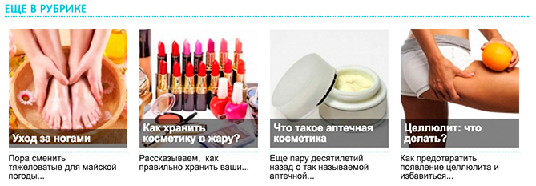

Интервью с врачом, членом Европейской ассоциации эндоскопических хирургов, одним из ведущих специалистов по лапароскопической хирургии Леонидом Юрьевичем Смолиным.
Здравствуйте, Леонид Юрьевич Смолин! О чем сегодня пойдет речь?
Здравствуйте! Сегодня мы будем говорить о Гипергидрозе! Ведь большая часть людей не знает, что это, при этом ежедневно страдая от этой проблемы!
Вы знаете, я сама не знаю, что это. Расскажите подробней об этом.
Гипергидроз – это чрезмерное потоотделение всего тела или его участков. Для Гипергидроза свойственно повышенное подмышечное или ладонное потоотделение, выраженное покраснение лица при стрессе, неприятный запах, зуд, воспаление потовых желез и прочее.
Неужели это настолько важный вопрос???
С первого взгляда нет, но… у людей, страдающих таким недугом, возникают проблемы в интимном общении, трудности при публичных выступлениях, при работе с бумажной документацией. Ведь все это вызывает закомплексованность в человеке, его осанка меняется, он становится более раздражительным, меньше общается с людьми, одевает темную одежду и т.д.
Леонид Юрьевич, скажите, Гипергидроз несет угрозу для жизни человека?
Сам по себе гипергидроз не несет в себе никакой угрозы для жизни и здоровья, но является фактором, существенно снижающим качество жизни человека.
Статистика:
Статистика ужасающая. Что же вы посоветуете делать этим людям?
Перовое – не живите с этим! Не нужно бояться и страдать! На нашем уровне развития, нужно бороться с любой проблемой и наслаждаться жизнью. Сейчас существует много вариантов решения Гипергидроза. Но советую – наше средство! Оно подойдет каждому человеку, а особенно тем, кто стыдится этой проблемы или не имеет времени заниматься ее решением!
А что это за средство?
Средство называется Dryzer. Оно нормализует психо-эмоциональное состояние, устраняет неприятный запах и причины повышенного потоотделения. Так же стоит отметить, что Dryzer состоит из натуральных компонентов, мягко воздействуя на организм и укрепляя нервную систему.
Чтобы получить средство, нужен рецепт от врача?
Если у Вас есть симптомы Гипергидроза, о которых я говорил ранее, и Вам это мешает полноценно жить, то Вы смело можете приобретать Dryzer самостоятельно с официального сайта.

Ура! Я рад, что нашлось такое средство, а то я работаю строителем, и ноги воняют сильно к концу дня, ладно мы на стройке с мужиками, там у всех воняет, ну а дома перед женой и детьми стыдно, а если гости придут?)) Поэтому перехожу на официальный сайт! Куплю себе Dryzer, и буду строить себе новую жизнь без вонючих ног.
Оно правда поможет?
А я после беременности стала сильно потеть… Эх
А я считаю, что надо мыться почаще, от кого пахнет потом , те вообще не моются такое чувство!
Аленушка, а при чем тут не моются, тут речь о другом, о сильном потоотделении
Аленушка, такое чувство, что вам заняться нечем вот пишете всякую фигню
мда… Я думаю люди, которые сильно потеют, чаще обычного моются.
Заказала, Dryzer, ждуууу!
Тоже закажу, у меня спина потеет
Умная голова глаголет, что Dryzer помогает - проверено.